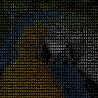
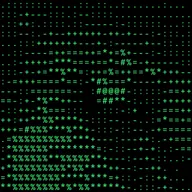
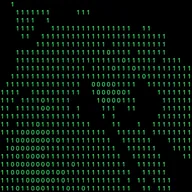
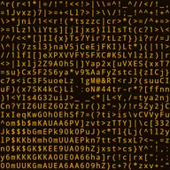
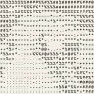
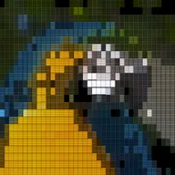
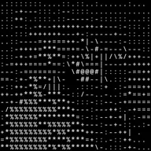

ASCII

Перетворює шар на текстовий арт із літер і символів: яскравіші ділянки отримують «щільніші» символи. «Розмір» задає ширину кожного символу на шарі, тож символи рухаються, обертаються й масштабуються разом із ним. «Колір» зберігає власні кольори зображення або використовує один колір, а «Лінії країв» малює контури символами | - / та \.
ASCII перетворює шар на текстову графіку з літер і символів: світліші ділянки отримують «повніші» символи. Працює з відео, фото, текстом і фігурами.
- Розмір — ширина кожного символу, виміряна на шарі, тож символи рухаються, обертаються й масштабуються разом із ним. Менші розміри зберігають більше деталей.
- Символи вибирають набір: Детальний, Простий, Блоки, Двійковий або Власна, де ви вводите власні символи.
- Колір зберігає власні кольори зображення (Оригінал) або малює кожен символ одним кольором тексту. Фон може бути Немає, тоді шар проглядає між символами, або кольором фону.
- Контраст, Яскравість та Інвертувати змінюють, який символ отримує кожна ділянка. Лінії країв малює контури символами
|,-,/і\.
Пресети: Terminal, Binary Rain, Amber Monitor, Newspaper, Blocks і Line Art.
Налаштування
| Налаштування | Тип | Діапазон | Типово |
|---|---|---|---|
| Розмір | Число | від 4 px до 200 px | 12 px |
| Символи | Вибір | Докладні, Прості, Блоки, Двійкові, Власні | Докладні |
| Власні | Текст | – | .:-=+*#%@ |
| Колір | Вибір | Оригінальний, Один колір | Оригінальний |
| Колір тексту | Колір | – | #FFFFFF |
| Фон | Вибір | Немає, Колір | Колір |
| Колір фону | Колір | – | #000000 |
| Контраст | Число | від 0 до 4 | 1.2 |
| Яскравість | Число | від -100% до 100% | 0% |
| Інвертувати | Увімкнено або вимкнено | – | Вимкнено |
| Лінії країв | Число | від 0% до 100% | 0% |
Пресети
Виберіть один зі сторінки ефекту в Бібліотеці ефектів. Кожен із них — готове налаштування, яке можна й далі змінювати.

Термінал
Двійковий дощ
Бурштиновий монітор
Газета
Блоки
Лінійна графіка